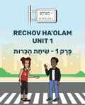
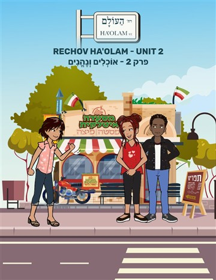

Olam street 1.9 & 1.13
שיעור עברית אינטראקטיבי · Olam Street 1
פתיחת השיעור ←Olam street 1.14 & 1.16
שיעור עברית אינטראקטיבי · Olam Street 1 · אני, אתה, את
פתיחת השיעור ←Olam street 1.17 & 1.18
שיעור עברית אינטראקטיבי · Olam Street 1 · שיחה וכתיבה
פתיחת השיעור ←Olam street 1.15 & 1.19
שיעור עברית אינטראקטיבי · Olam Street 1 · קריאת אותיות ומילים · אני אוהב
פתיחת השיעור ←Olam Street 1.20
שיעור עברית אינטראקטיבי · Olam Street 1 · אוהב או לא אוהב?
פתיחת השיעור ←Olam Street 1.21 & 1.22
שיעור עברית אינטראקטיבי · Olam Street 1 · תל אביב
פתיחת השיעור ←Olam Street 1.23
שיעור עברית אינטראקטיבי · Olam Street 1 · בן כמה? איפה גר?
פתיחת השיעור ←Olam Street 1.24 & 1.25
שיעור עברית אינטראקטיבי · Olam Street 1 · שיחה בזוגות והמחזה
פתיחת השיעור ←Olam Street 1.26 & 1.27
שיעור עברית אינטראקטיבי · Olam Street 1 · המכביה וענפי ספורט
פתיחת השיעור ←Olam Street 1.28, 1.29 & 1.30
שיעור עברית אינטראקטיבי · Olam Street 1 · שיעור מסכם: ספורט, ימי השבוע והאזנה
פתיחת השיעור ←
Olam street 2.1–2.4
שיעור עברית אינטראקטיבי · Olam Street 2 · מי אני, אוכל ישראלי, כתיבה וקריאה
פתיחת השיעור ←Olam street 2.5 & 2.6
אוכל רחוב ישראלי · אני אוהב לאכול
פתיחת השיעור ←Olam street 2.7–2.9
מה שלומך? · מה שלומך?
פתיחת השיעור ←Olam street 2.10–2.13
בסדר · טוב · מה אתה אוהב לאכול?
פתיחת השיעור ←Olam street 2.14
קומיקס: בדרך לפסטיבל
פתיחת השיעור ←Olam street 2.15 & 2.16
רעב · טעים
פתיחת השיעור ←Olam street 2.17 & 2.18
טעים או לא טעים?
פתיחת השיעור ←Olam street 2.19 & 2.20
סָלָט יִשְׂרְאֵלִי
פתיחת השיעור ←Olam street 2.21 & 2.22
מָה אוֹכְלִים בַּבֹּקֶר?
פתיחת השיעור ←Olam street 2.23 & 2.24
קוֹרְאִים ג ב נ ט ר · כּוֹתְבִים גְּבִינָה
פתיחת השיעור ←